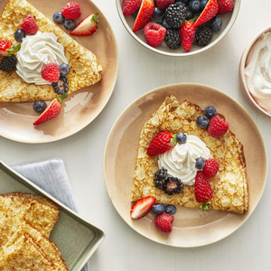

Basic Crepes
Back To Main Page

Description
Ingredients
- 1 cup all-purpose flour
- 2 eggs
- ½ cup milk
- ½ cup water
- ¼ teaspoon salt
- 2 tablespoons butter, melted
Steps
-
In a large mixing bowl, whisk together the flour and the eggs. Gradually
add in the milk and water, stirring to combine. Add the salt and butter;
beat until smooth.
-
Heat a lightly oiled griddle or frying pan over medium high heat. Pour
or scoop the batter onto the griddle, using approximately 1/4 cup for
each crepe. Tilt the pan with a circular motion so that the batter coats
the surface evenly.
-
Cook the crepe for about 2 minutes, until the bottom is light brown.
Loosen with a spatula, turn and cook the other side. Serve hot.